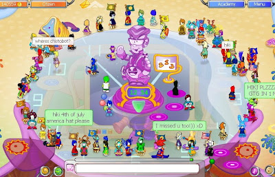
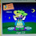

We had a quickee party today. We made a circle at the Park.
(We can do it fast now LOL)

But I wanted to ask you a question guys. What kind of parties do u like?Coz lately every party ends with the rain... I know you like it, but parties are for FUN! not for the simple rain, right?
So share your ideas with me :)
Let's forget about the rain and imagine the perfect party!
What should it be?
Tell me :)
Hiki

-2.jpg)


{kind=link}
93 comments:
Parties without spamming are great! :)
we should do a mod talking party
where mods talk very much :)
It wil be fun :)
a black and blue party for the moon :D
coooool! it was a great party! I was there! I AM THERE! YAYAYYA! lol
hhhhhhmmmm halloween party:D
lol
make it dark all place and only chobots gettin light:D
it will be fun party will little scary:D
~Gonzales~
Hmm what parties would I like....Maybe a rainbow party, where everyone would dress in a diffrent color :)
ask a mod a quetion party :)
people ask mods questions :)
or
picture chat party
people can only talk in picture chat
I agree! Its not about the rain! But My one of my Favorite party is the Nichos vs Chobots party! Buw We could have a Fashion show lol or a Dance party , Japananese Party ( We all dress Japanese), Pyjama party ( lol sorry) a Concert those are some that i came up with! :)
-Zig-
lol! i ddint read the post, ummmm! the best party so far, well idk! lol! so far all the parties have had rain! but the best one of all was ur 100 bday! yeh! that was fun! lol
all-safe-image-chat party!!!,mask party
agent party ..,circle party
japanesse party,age 0 party
mimo item party , dress-like-bigben2 party lol!
rainbow color party
hide n seek , new room opening party
You are very much right hiki. I mean, sure rain is fun... but what we really enjoy is mods being there. We should have a girls only party! Where everything is pink and girly and we sit around chatting with you and jessie!
neon
Hi Chase39 here! I was thinking of maybe some more magic types like for fall party's fall leafs falling from the sky, And for winter party,s snow fall from the sky and maybe snow that lands on the ground makes a bunch of piles of snow and snow clouds would come, Well thats all i can think of have a nice day mods bye! =)
Chase39
one qustion why you mod dont talk much on the party?and you if you dont whant you dont mast to make it rain,some chobots dont know thet party is to have FUN and not only for rain!!!!!!!!!! :) klarisa
I think the perfect party is with lots of games!!!
We will play multyplayer games, games look like hide and seek, gmes in which mods says something and have to do it... etc.
I would like parties without spamming and asking for rain;) All I want is FUN!!! And if someone spamms can u take his chat at least for 5-10 min? Its really annoying that a chobots says rain rain rain rain rain rain rain rain rain rain!!:S Could be black and orange party cuz its halloween ofcourse;)
~Boy11
sorry spelled wrong:S I mean not to ask for rain srry:S
a mod party where all the mods come and do all sorts of awesome mod magic for ages and like just one rain to finish off the party and the mods adding people but there is no talking out loud only to each other in private chat so theres no spamming and no lag
i know halloween party. we be spooky. boo! lol. make everything dark. hehehe. we will be sacy lol.
Hiki Quicky is fuuun
wow i am 290. cool. but i was shocked. lol
black and red party :P
without rain cuz ppl will spam 4 rain
make us red and make the place black it will be fun :D!
-3looi
im not joining the party cuz i quit but i just want to say a idea :P
A wacky dress up day cuz sometimes we r wacky for hiki and I agreed with rain ends the party and ban the spammers. Cause it's annoying
how about a chobots party?
Erm... A rain party? Jk =P
A party where you could meet and chat to all the mods =D!
ur right hiki not about rain i like it but its not fun having it alot of the time and i rember that poll rains won i thought friendship would and also friendship is best thing in chobots no matter what!
also i think maybe all of ideas on here is great like picture chat party rainbow party hmm maybe a mod says party so like u say mod says to dance then we all dance lolz
how about a party for nicho who spam that would be kool but no rain not one
danshannon12
a halloween party where there is ghost nichos and pumpkins and stuff that would be fun
What about a Halloween party where you decorate the entire chobots with spooky items and spider webs and make it 'misty/foggy' with a full-moon in the background?
Anyway I like magic parties and I think it would be AWESOME if everybody's chat was muted and then we could just watch and describe our emotions with the emoticons but this is just my opinion.
We could have a party where u change our chat to red ane we'll have mod party! (If you can make red chat)
partys with NO LAGG! it would be fun if we had no lagg. because we cant have fun with lagg. and rains are great. except when we get rain its ussually the same stuff over and over. (you should make party hats) with cool designs and we can start to collect them at partys!
ps : im _blockhead_
Hi Hiki its your buddy Kaicooper :)(: I know a cool party that could happen A Sun Party where the rooms yellow and everyones Stars and Also a Black and White party for The Moon :) (Room is White and Everyone is Black :)(:
Thanks!
Kaicooper :)(:
Chobots! New Group????
Hiki i would like to say somthing i email support of Chobots and i never get a reply or anything and if you go to my blog i have some pictures for a group that i want to create!
Kaicooper:)(:
hiki what if you make a party every time a country has its national "birthday",that would be great
we should do like a halloween party!:D
or
idk kinda like a prom but no dating lol just dancing :D
or..
um
i like elise's idea w pictured chat party
lol
Lime~
Lavadog~
That is sooooooooooooooo cooooooooooooooollllllllllll
i like hide and seek parties but in a cooler way! u hide then after a while you doi a rain so the ppl that found u get items! =D
hayy
i know you probley wont remember, buhh ohh well i guess, im summer_fisher12, i used to be one of ur friends, buhh my "friend" hacked me, and i was wondering if u could re-add me, i was the gurl who was talkin tuhh u for like 2 hours about our pets, lol, u said u loved animals and u have a cat that always sat on ur lap, lol, buhh please please please add me !
p.s the/a party should be for like the upcoming holidays (:
like do the rain last but do it like hallowen dark and stuff :)
party without ppl talking cause that way we wont get laggy oh and party without ppl moving all lot that wont be laggy too and spamming also
How about a party were the mod adds, doesn't rain, talks alot, does a mod. magic that makes us into a chess piece
I think everyone should dress as grey or we can have a party when we have to dress up for Halloween!
~Pokefire
Ooh! I know a good party! A fire vs ice party! People with Fire wings have to wear only fire wings and people with ice wings have to wear only ice wings! Then again, my idea is more like a competition. But anyway, and the team with the most people who have either fire wings or ice wings win! And yes, people spamming for rain is bad.
I think u should do a mirror party! That the mods are at the same relative place in each location! That way the rooms wont be so crowded because there will be one mod per room! Hope this happens matias383
an adding party where mods add more people and defintaly more magic
no people asking for rain that gets annoying and make us look like ballons that would be cinda cool
chobot name fratty guys
Hi ..
Hiki i lov all ur parties!
Could we have party with no chat,only the mods talk,lots of magic and some team games? We could all wear a team color say one team all red and one all yellow?
Oh and only rain at the end from ur spaceship :D
A MEGA MONSTER MOD MAGIC PARTY!!!!! xD lol
~Plunder

PARTIES WITHOUT SPAM!!! my dream!
lol! at every party i go to i always end up laggy and crash!
Well hkik, good of you to ask!
I love parties without LAG and SPAM.
I also like parties where you twist up the screen and distort the vision
fuzzlepan
a party with no talking no lagging with a sun that sets with a sunset then wen it turns dark shoot fire works but i do love rain i love you to hiki your my favorite mod ever not kidding
oh and my chobot name isnt nokia its nokia7788
yeah i agree with you. in all the parts i go to people are always begging for rain and its annoying. maybe you should start making parties without rain for punishment lol jk.. but maybe you can make a halloween party and make it rain costumes.. or just put the costumes in the catalog. and then we can all dress up and party (: and you can make us all orange and the background black that w'd be cool
parties-
Parties are perfectly fine without rain. I wasn't at your quickee party but I am sure it was fun, but I think parties need more space ships! xD
-elite
easter party!! people but on there bunny masks
i like 0 day parties because we get less lag with no cloathes also i was wondering if u could make them later like at 22:00 chobot time instead of like 12:00
That would be fun where you had a "Mods Adding Party" where a bunch of mods came and added everyone! ^_^
And I agree, there is alot of rain at parties and I think the more you rain the more people spam for it. lol! I mean, I'm not saying I don't like it, I for one love it, and I think everyone does, but there doesn't need to be too much of it, because then it won't be special when it rains. Hope that isnt too confusing hehe
~Yolande
You disabled chat until party ends... all these mods come and... no rain needed. :D
And since there would we lots of mods= cool mod magic! =D
xoxo Julz
Mabey there sould be new magic that makes people no talk so no lag
and i think a party where you need clues to get there
I have not been to a party :( so why cant you tell what server and what time?
a no rain party. that will help the spamming easily
I personally believe that a Halloween Party would be tons of fun. You could do magic making the all chobots in the room look orange, and then make the background black, if you can then you make it so you can see chobots over the background, but you can't see anything else. if you could do that for a party, I think everyone would be thrilled. I also believe that everyone would be happy if you could make a party without lag, I realize that would be very hard to do with so many people in one room. But if it was possible to make a party without lag, the parties would be much more fun.
i say we have a halloween hunt and you have to like find candy and suits and other stuff like that and if you find everything you get a suprise.
Mods if you would like to contact me go on waynelils1.blogspot.com.Thats my blog and just comment on one and ill tell you my email and stuff ta ta now
:) P.S:I Love Ice Cream and Pie!!!!
umm paty when we have a i love modds party and we all love the mods and it rains love stuff and we dress up fancy and it is like we are going on a date witha mod
we shud do a party everyday b4 a holiday =D u shud have bags fall from the sky on christmas with like 3 things in it!wouldnt that be cool!
picture chat party
people can only talk in picture chat or a bow down to monkeyboi912 party is good or a party were mods add ppl that dont spam or scream SUBSCRIBE TO YOUTUBE.COM/MONKEYBOI912CHOBOTS
I personally believe that a Halloween Party would be tons of fun. You could do magic making the all chobots in the room look orange, and then make the background black, if you can then you make it so you can see chobots over the background, but you can't see anything else. if you could do that for a party, I think everyone would be thrilled. I also believe that everyone would be happy if you could make a party without lag, I realize that would be very hard to do with so many people in one room. But if it was possible to make a party without lag, the parties would be much more fun. BUT STILL ONE RAIN CANT DO MUCH MAYBE IF WE DONT SPAM WE GET ONE RAIN OF 999 SHIRTS
I think there should be a party that lasts for like 3 hours... A Halloween Party and longest lasting party at the same time, but it has absolutely NO RAIN until the very last 10 minutes. The mods should all have their playercards open, and all the moderators could be there.
Rain is making people that would be great agents on Chobots to beggers, and they get chat bans and stuff like that.
~mtz
PS. No offense against rain. I like it, but we NEED to stop begging. It has turned actual agent into beggars too.
MY BLOG
Click Here
Parties that don't freeze or lag your computer. Cause like i have to restart my computer and when i go back i hear everybody talk about it and i missed it! I already missed 2 parties. They were jessie's magic one and smufet's!
Thanks, King_Bubbles a chobot.
P.S Can we have a competition on how many friends you got?! Thanx :]
you should have a holloween party, but one that everyone is invited not only ones wearing costumes so we can all come, oh and maybe have holloween t-shirts for sale that would be really cool, or holloween scary things for sale to bring to the pary. It would be really cool to have a pet party for everyone to show off their pets. Sorry for to many ideas. :) the parties are cool not only the rain its cool to visit with other people!
The ideal party is 1 where there is no spam,no lag,no begging etc.Anyways my idea is a crowd party where every1 goes to only 1 corner and parties there.Also,how about a 1 clothes party where chobots can only wear 1 clothes.
Maybe a bubble party!
When bubbles float all around the screen!
i like any parties with anyone and im glad to help if i can
The perfect party would be......a citizen only party. Because after all we DO pay for priveleges. And it could be in any room just make it dark like the nichos mission and anyone can go even non members but you have to have a light bulb to be able to see the party that would be sooooo could pleeeeeeeease can we do it hiki cos i am a member for only 5 MORE DAYS :(
-jellybaby321
a party wher evryone can add their favorite mod,but I currently need to become agent ifrst cuz my list is overloaded with 349 friends
why not a party wich we play many activites in a citizens house
oh i got a party a sports party
we should make a haloween party wich all freaky thing come out from no where or a party where we all are flying with rocket boots we all need to bring a rocket boot or a choboard anyhting wich makes us fly.
hiki can i eat a waffel
A party where a teeny bit of rain comes first so people stop spamming all through the party. Then, do ALL the modmagic you can! That would be fun!
i guess it could be a party at halloween ! or on 17 october ! and it will be orange the color of pimkins and there be ghosts , and then there will be some vampires and other scary things , and every1 should get dressed as an a nimal or a monster , or of course as a mod
i think there should be a none spamming party with lots of moderator magic:)
yoshi247
Can we have trading and gifting Back plzzz:D any party
I'm King_Bubbles from chobots. I know this is silly but instead of rain can we have it in bubbles and click on it and the items pop out! Plus can we have gift and trade back. Can we have pins and ceremonies like black friday like clubpenguin! And can we have more places.I try so hard to tell ppl about this game in other games but they just ignore me! And plz add me. And i want a party we have a happy bday party like a bday. And can we have like jobs to earn money and eat things like pets. [Won't we starve!] Sorry for so many ideas but yeah..
Stay cool, Mods King_Bubbles!
Well I like partys were there rAINBOWS AND FIREWORKS AND LOTS OF RAIN like raining v-flags
NO TALKING PARTIES! i did it on this other site it was SO FUN! everyone was trying to act out what they wanted to say by moving their character. also it was my idea, u wont be copying that site. also no picture chat only Icons! FUN FUN FUN! NO TALKING PARTIES! plus it reduces spamming, and lagging.
i also think u should make rain mor "exclusive" like only having up to 3 rains TOPS pass the screen at each party. unless u have a rain party.
Right HIKI we should forget about the rain we think of the fun flying in our heads.But when mods come the people of chobots keep spamming other people why?when i meet these moderators chobot and vayerman and jessie2000 i dont know why but thanks for the info HIKI bye.....
Hi Hiki! I think we should have a Halloween Party on Chobots! Me and my freind thought that would be a really fun one that everyone would like, because we can dress up and stuff!
Comments are preserved read-only.